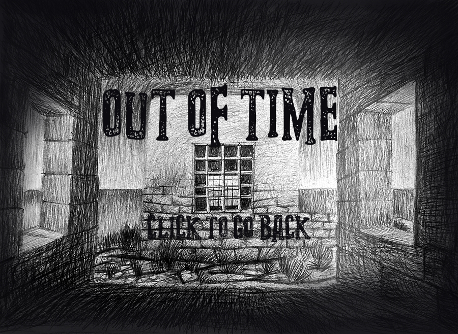
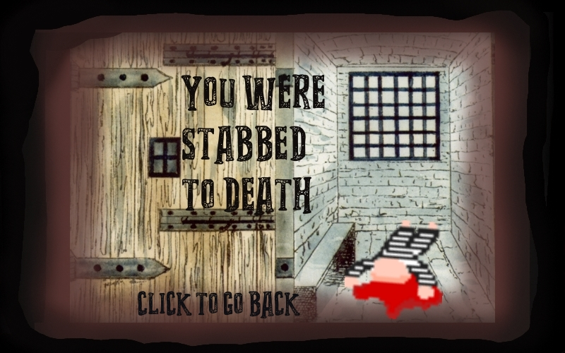
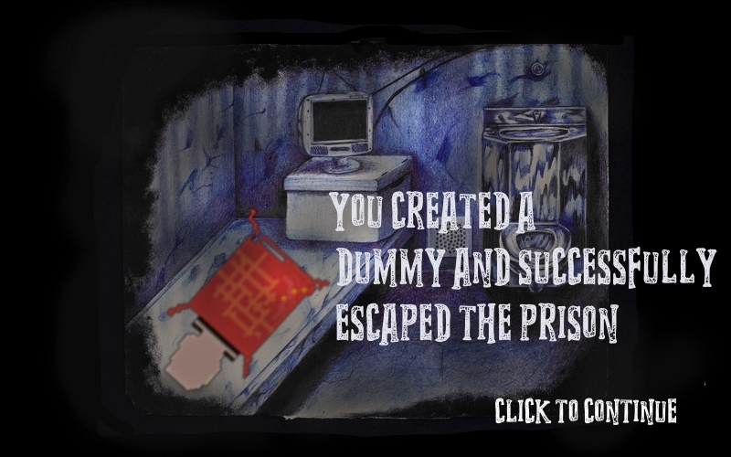
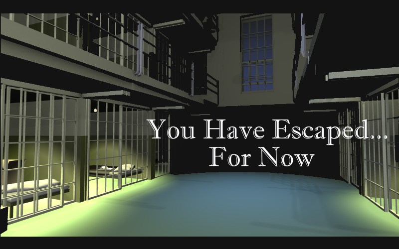

Brick Breaker: Use WASD to move the paddle left and right. Press the Space Bar to launch the pick axes towards the bricks. Hit all of the bricks to continue to the next level. Beat all of the levels and you move on to the next mini-game.
Search and Escape: Use the WASD keys to move the prisoner throughout the various rooms. Locate each of the items in order to create a dummy of yourself. Don't bump into any of the other prisoners or they'll stab you! Once you've created your dummy move on to the next mini game.
Catch the Keys: Use the arrow keys to move the prisoner away from incoming lasers. Catch all five keys in order to progress to the last level.
Infinite Scroller: Use the spacebar to jump over blocks as you attempt to escape the final stage of the prison
Complete all of the mini-games and you win!
Cade was reponsible for this level. Brick Breaker based most of it's mechanics on common brick breaker games, focusing on developing simple mechanics within difficult levels.
The biggest challenge faced when building this game was the figuring out how to remove the bricks once they had been hit the correct amount of times. This as well as figuring out how to make the pix axe swing from corner to corner to give that autentic brick breaker feel.
Pamela was responsible for creating this level. Like many other tile-based games, Search and Escape contains various different levels with the main goal of collecting 4 different items in order to escape the prison.
The biggest challenge faced when building this game was the enemy prisoners, due to the fact that they would move around randomly throughout the canvas and at times load outside of the canvas causing the entire game to crash. A simple fix to this was restricting each enemy prisoners’ x and y coordinate, essentially making it so that they can never move or display if they are not within the canvas space.
Isabelle was responsible for this level. What started out as a one-directional catcher game became a more difficult (and hopefully, more fun) way for the player to acquire and avoid certain items on screen.
The biggest challenge was working with the laser beams. Collisions were coded by hand, and making sure the player interacts with diagonal lasers properly was especially difficult because the image had a lot of transparent space which needed to be taken into account. To get around this, collisions were checked at several points along the visible laser instead of just the center of the image or its rectangular edges. In addition to this, multiple laser objects were created and stored in an array which was looped through, but they were initially appearing all at once. Thus, a small delay was added to stagger the lasers and randomize the number shown on screen at any given time.
Justin was responsible for creating this level. Using the logic of other similar infinite scrollers, the player itself isn’t actually moving (until the end when the timer stops); the illusion is created by having everything around the player moving instead.
The challenge of creating the escape prison was figuring out a way to, well, scroll infinitely. The decision made was to take a wide background image (at least twice as wide as the canvas width), and actually make a clone of it as well, and have them scroll side-by-side in parallel. Then, when one image passes through the screen, “teleport it” to the other side of the image following it. Since this is going on behind the curtain, the process is invisible to the playing user.
One of our goals as a group was to create a game that was not only engaging to play but also has a learning component that was relevant to the real world. In this light, we added prison statistics as a transition screen between levels to educate the player about some (quite surprising and concerning) facts about the country’s criminal justice system.
Combining the levels was byfar the hardest part of the entire process, mainly because we all had so much code to combine. Justin came up with the idea of making each of our games a class and putting them into an array and calling them at the appropriate times. What we had a lot of trouble with specifically was the actual conversion as classes were not something most of us knew how to do super well. While this part of our projecr was by far the hardest, it became so much easier at the end when we had to run through each level.
Below you will find screenshots for the vaious game states I implemented, as my game can sometimes be hard to beat. The Escape prison game can also be a bit tricky so below you will also find a screenshot of the end screen.
   The game is quite simple: beat all four mini-games to win and escape the prison. Our games, however, can be a little tricky, so we implemented a cheat button to skip through each mini-game when you are on them. TO CHEAT: PRESS THE "P" KEY ON YOUR KEYBOARD ON ANY MINI-GAME TO ADVANCE THROUGH THE LEVEL AND GO TO THE NEXT!